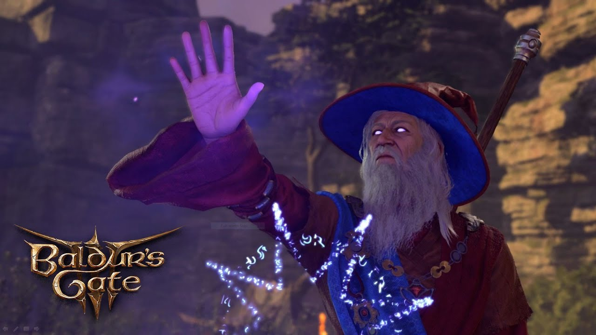

How I Optimize My Characters
My favorite ways to play wizard in Baldur's Gate 3.
Choose Your Class
Wizard Builds
Evocation Blast Master
Maximize your damage output with the level 10 Evocation subclass trait "Empowered Evocation", adding your Intelligence modifier to all spell damage.
View Build

Evocation Blast Master Build
Race:
Races don't really matter that much, just go for something pretty hehe :3
Ability Scores:
Prioritize Intelligence, Charisma for a level 2 dip into warlock, and Constituion
Key Spells:
- Eldritch Blast (Cantrip)
- Scorching Ray
- Magic Missile
- Any Low level spell that shoots multiple times!
Items
- Birthright Hat: Increases charisma by 2

- Lightning Staff: 1 extra lightning damage per attack